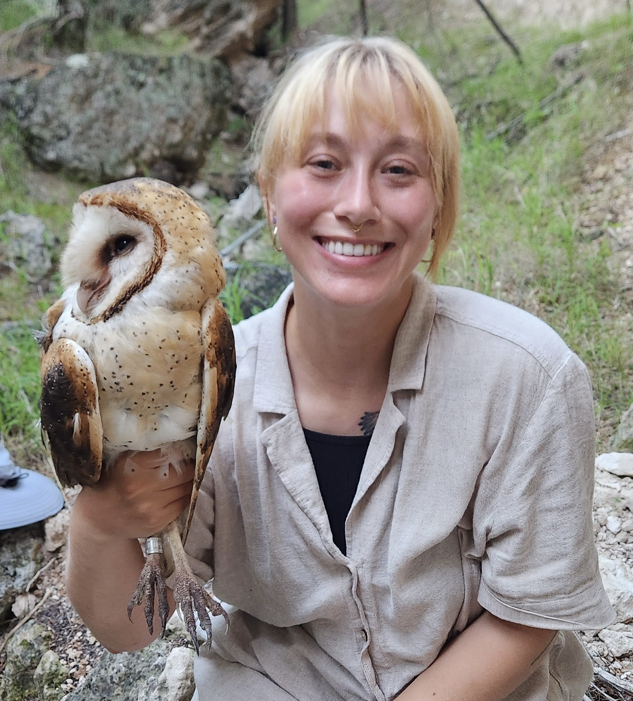
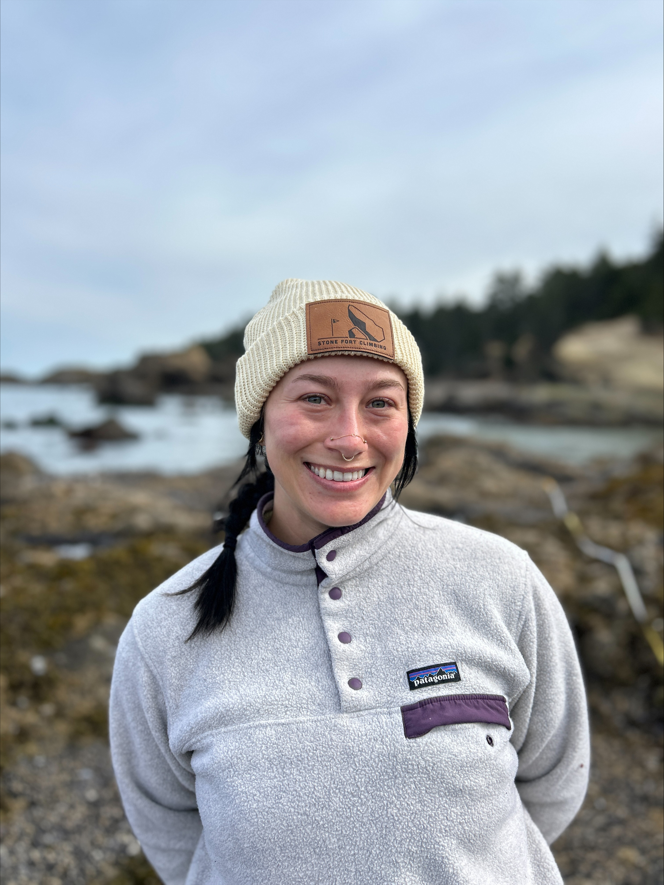

Hi, I'm Arina. I am a 3rd year PhD student in the NovakLab at Oregon State University investigating predation risk effects on prey population growth and dynamics. My research is at the intersection of theoretical and empirical ecology, consisting of field work, modeling, and lab experimentation. If I am not in my office, look for me in the mid-intertidal zones of the central Oregon coast looking at whelks and barnacles, or in the prairie of western Nebraska seeking out barn owls. I also enjoy wildlife photography!
Wanna chat? Email me at martarin@oregonstate.edu

Peer-reviewed journal articles, book chapters, and reports.
2024
Your most recent paper title goes here — replace with the full title
Journal of Ecology, 112(3), 450–467
DOI →Second paper title — perhaps on landscape or population dynamics
Global Change Biology, 30(1), e17045
DOI →2023
An earlier paper — replace with your actual title and authors
Ecology Letters, 26(8), 1234–1245
DOI →2022
Your PhD chapter / thesis paper — perhaps a methods or survey paper
Methods in Ecology and Evolution, 13(4), 889–902
DOI →Last updated [Month Year] · Download PDF
↓ Download full CV (PDF)Education
PhD in Ecology
University Name, City, Country
Thesis: "Your thesis title here." Supervised by Prof. Supervisor Name.
MSc in [Subject]
University Name, City, Country
BSc (Hons) in [Subject]
University Name, City, Country
Research positions
Postdoctoral Research Fellow
Institution, Lab or Group Name
Brief description of project and funding body.
Research Assistant
Institution, Department
Grants & awards
Grant or Award Name
Funding body · $XX,XXX
Another Award or Fellowship
Organisation name
Skills & methods
Fieldwork takes me to places where slowing down and looking closely is simply part of the job. These photographs are made during research, often in the same moment as data collection — a record of place as much as of science.
To add your photos: upload image files alongside index.html in your GitHub repo, then replace each placeholder div with <img src="yourfile.jpg" alt="Description">.